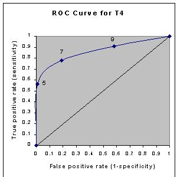

رسم و تفسیر منحنی ROC
جمعه ۲۰ تیر ۱۳۹۹
۱ دقیقه مطالعه
رسم و تفسیر منحنی ROC
این بخش ادامه می یابد با مثال کم کاری غده ی تیروئید که در بخش قبل شروع شده است. در بخش قبل ما نشان دادیم که جدول زیر یعنی :
| ستون 1 | ستون 2 | ستون 3 |
|---|---|---|
| T4 value | Hypothyroid | Euthyroid |
| 5 or less | 18 | 1 |
| 5.1 - 7 | 7 | 17 |
| 7.1 - 9 | 4 | 36 |
| 9 or more | 3 | 39 |
| Totals: | 32 | 93 |
میتواند خلاصه شود به کمک مشخصه های عملیاتی زیر:
| ستون 1 | ستون 2 | ستون 3 |
|---|---|---|
| Cutpoint | Sensitivity | Specificity |
| 5 | 0.56 | 0.99 |
| 7 | 0.78 | 0.81 |
| 9 | 0.91 | 0.42 |
مشخصه های عملیاتی ذکر شده در بالا میتواند کمی اصلاح شود و سپس به صورت گرافیکی همانطور که در زیر می بینید نشان داده شود.

به این نوع گراف ها Receiver Operating Characteristic curve یا منحنی ROC گفته می شود. به فارسی «منحنی مشخصه عملکرد سیستم» نام دارد.این نمودار نرخ مثبت صحیح را در مقابل نرخ مثبت غلط برای برش-cutpoint های ممکن متفاوت از یک آزمایش تشخیصی را نشان می دهد.
منحنی ROC چندین چیز را به تصویر می کشد:
- این منحنی رابطه ی بین حساسیت و ویژگی-specificity را نشان میدهد(هر افزایشی با حساسیت همراه است با کاهش مشخصات-specificity).
- اگر با محور های x و y این نمودار یک مستطیل بسازید ، به فضای ایجاد شده فضای ROC می گویند. هرچه منحنی از مرز سمت چپ و سپس مرز بالای فضای ROC پیروی کند ، آزمایش دقیق تر است.
- هرچه منحنی به مورب 45 درجه ای(قطرای که از مبدا مختصات می گذرد) از فضای ROC نزدیک شود ، آزمایش از دقت پایین تری برخوردار است.
- شیب خط مماس بر نقاط برش - cutpoint نرخ درست نمایی-likelihood را نشان میدهد. برای نمونه در گراف بالا نرخ درستنمایی برای T4<5 برابر با 52 است. نرخ درستنمایی برای T4>9 برابر با 0.2 است.
- ناحیه ی زیر منحنی یک معیار دقت است که در بخش بعد به آن خواهیم پرداخت.